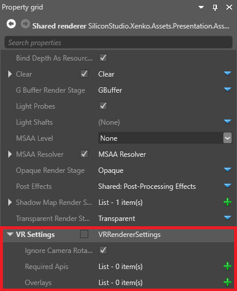
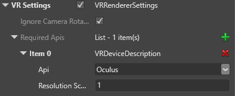
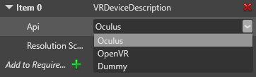
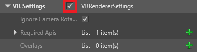
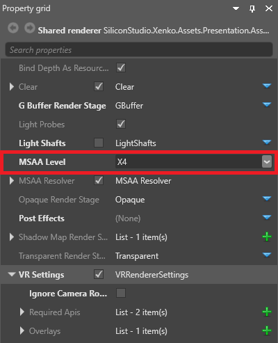

Enable VR
Warning
Приносим свои извинения за неудобства. Для этой страницы нет перевода на русский язык. Она будет отображаться на английском языке.
Beginner Programmer
This page explains how to add support for the Oculus Rift and Vive devices to your game. Stride doesn't support other VR devices yet.
In the Asset View (in the bottom pane by default), double-click the Graphics Compositor asset.

The graphics compositor editor opens.
In the graphics compositor editor, select the forward renderer node.

In the Property Grid (on the right by default), expand VR Settings.

Next to Required APIs, click
 (Add).
(Add).Game Studio adds a new API to the list.

From the Item drop-down menu, select a VR API you want your game to support.

API Description Oculus Supports Oculus Rift devices (best support for Oculus Rift) OpenVR Supports Vive and Oculus Rift devices (best support for Vive) Dummy Displays the game on the screen with two cameras (one per eye), instead of in the VR device. This is mainly useful for development. To display the dummy view in the Game Studio Scene Editor, make sure the editor is connected to the forward renderer. Repeat steps 4 and 5 to add as many APIs as you need.
Make sure the list order is correct. When your game runs, it attempts to use the devices in the list order. For example, if the first item is Dummy, the game uses no VR device. If the last item is Dummy, the game only uses it if there is no VR device available.
To change the order, change the selected VR device in each item.
Tip
Although the OpenVR API supports both Vive and Oculus Rift devices, the Oculus API provides better support for Oculus Rift. For this reason, we recommend the following list order for most situations:
Item 0: Oculus
Item 1: OpenVR
This means your game uses the Oculus API if an Oculus Rift device is connected, and the OpenVR API if another device (eg a Vive) is connected.
Enable VRRendererSettings.

Your game is now ready to use VR.
Note
After you change APIs, you need to reload the project (File > Reload project) for the change to take effect at runtime.
VR properties
| Property | Description |
|---|---|
| Ignore camera rotation | Disable camera movement from inputs other than VR devices, helping to reduce VR sickness |
| Resolution scale | The resolution of the image displayed in the VR device. Higher resolutions produce better images, but require more GPU. |
Multisample anti-aliasing
As aliasing artifacts are more obvious in VR, we recommend you enable MSAA (multisample anti-aliasing) in the forward renderer properties (above the VR settings).

Note
MSAA isn't supported for Direct3D 11 or lower.
Disable screen synchronization
For best performance, VR games need to run at 90FPS. This means you have to turn off synchronization with your monitor.
For now, this is done in a script. We recommend you use IsDrawDesynchronized in IsFixedTimeStep.
using System;
using Stride.Engine;
namespace VRSandbox
{
class VRSandboxApp
{
static void Main(string[] args)
{
using (var game = new Game())
{
//VR needs to run at 90 fps, vsync must be disabled, draw must be not synchronized
//You might want to set physics time step to 90 fps as well if you use character controller with unregular movements, but please avoid that! use Kinematic rigidbodies when possible.
game.IsFixedTimeStep = true;
game.IsDrawDesynchronized = true;
game.GraphicsDeviceManager.SynchronizeWithVerticalRetrace = false;
game.TargetElapsedTime = TimeSpan.FromSeconds(1 / 90.0f);
game.Run();
}
}
}
}